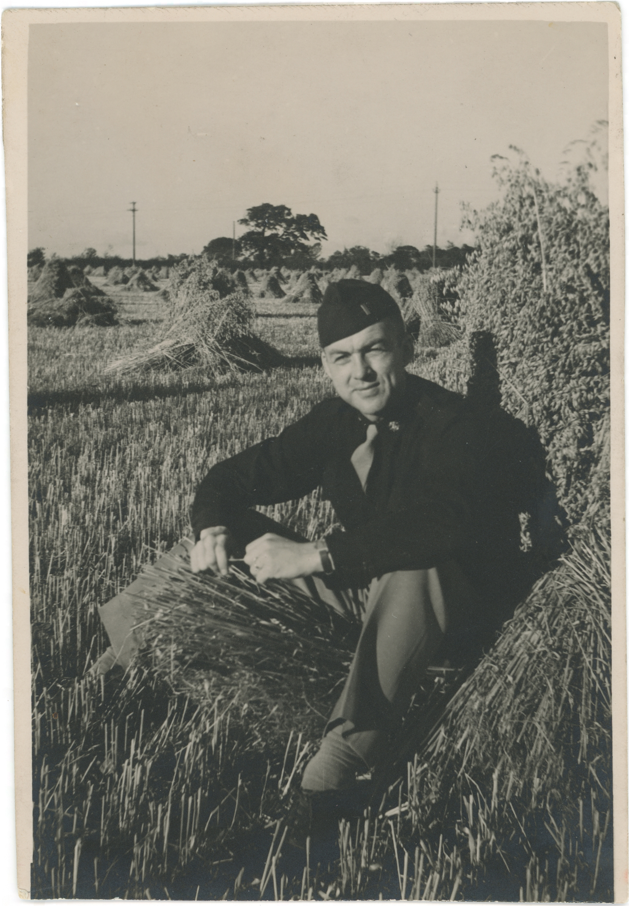

The Nelson Family Photographs collection documents the activities of three generations of Nelson and White families, primarily Marietta Duvalle Nelson (née White) and her husband, Phillip Milburn Nelson, in New York, during the early–to–mid–twentieth century. Created by Yolande E. Bennett for LIS 448: Digital Stewardship, Simmons University, Spring 2022.